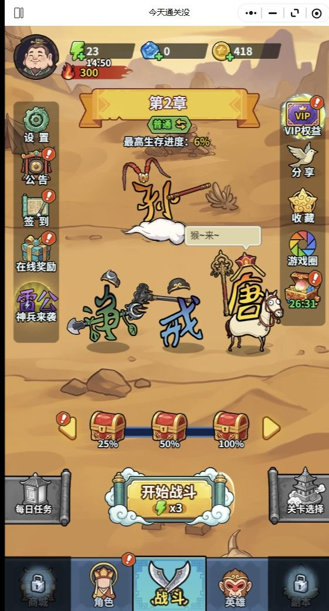
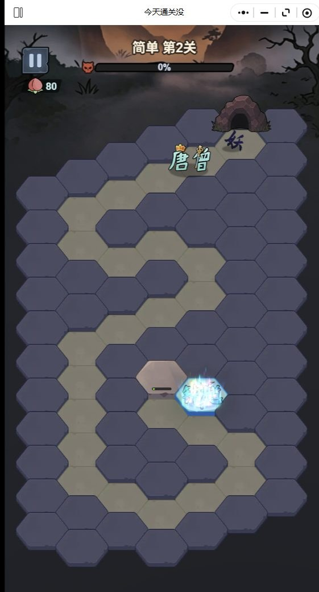
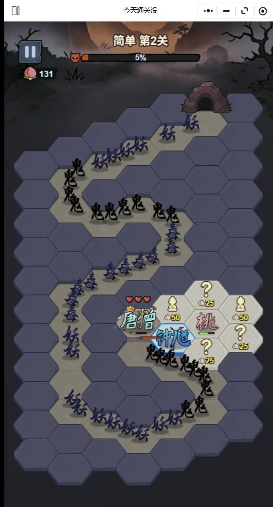
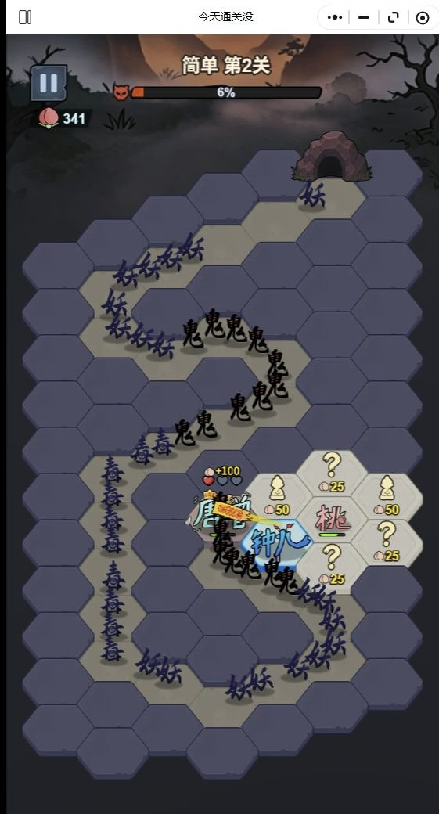
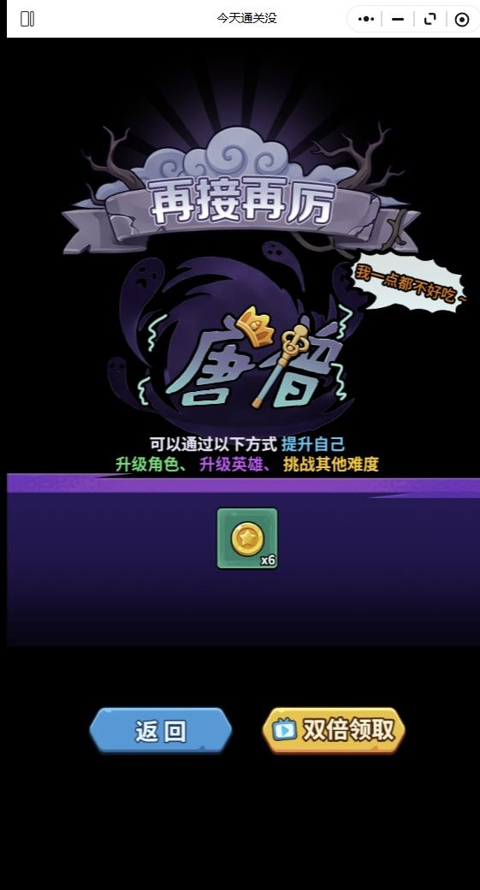
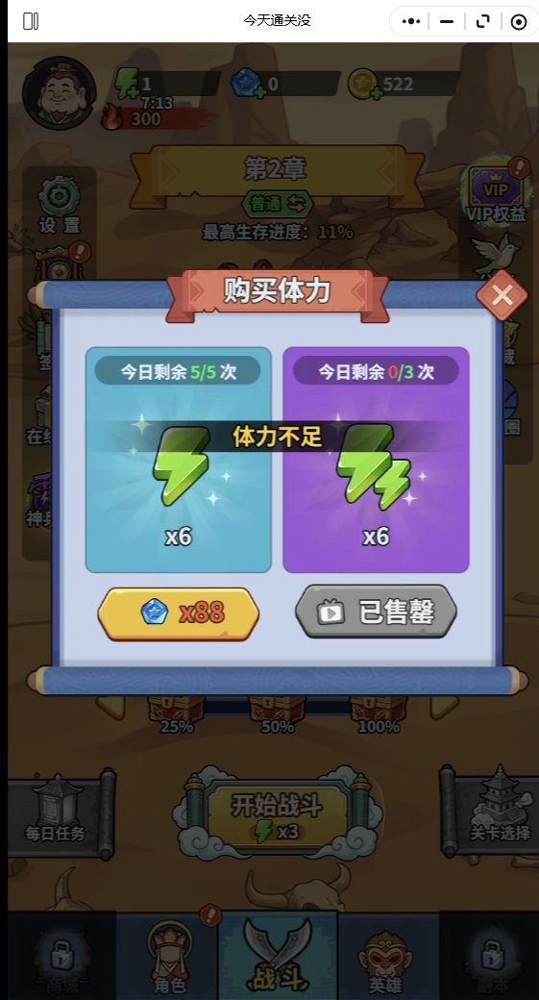

2026-11-09 按 appid 逐榜核对官方五榜（309 个在榜 appid）全部未上榜。
布塔拦妖 → 妖潮推进 → 升级角色/英雄 → 布塔更猛 → 通关。一局 93 秒，局内只做布防，局外养成决定强度。
官方简介是「棋盘求生，守护唐僧大战妖魔！」，角色为钟馗、二郎神、白龙马、红孩儿。西游 + 塔防是这条赛道最拥挤的组合，题材本身不构成任何差异化。
玩到的：体力门（30 点/局扣 3 点）、付费墙弹窗、复活看广告。未解锁：首充内容、首日充值上限、礼包档位都没实际充过。
预览 实机录像与截图
实机截图







系统与运营活动
今天通关没 —— 同赛道的另一个极端
一款跑在微信里的六边形塔防。主界面写着「第2章 · 普通 · 最高生存进度：11%」，点「开始战斗」消耗 3 点体力，进了战场就是熟悉的塔防：敌人从右上角的岩洞出场，沿着浅褐色地块铺成的 S 形道路走向右下角基地，你在道路两侧的蓝紫色空地上布塔。
玩法是真的塔防。但它的天花板低得离谱，而且变现设计从体力那一层就嵌进了循环里。
开篇：把它放进坐标系里看
单说「美术 4 分、核心机制 4 分」是没有信息量的 —— 分高说明什么？跟谁比？
先把它放到赛道里：微信小游戏 · 塔防/放置。这个赛道目前的头部是《正中靶心》（涂鸦风肉鸽塔防，局内 Roguelike 三选一 + 局外宝石/城墙/学徒四套系统），衍生出「靶心like」这一整条产品线，连《时温的旅行》《怪物联萌》《塔防三国志II》都是它的换皮或融合变体。
《今天通关没》和它是同一个赛道的两个极端：
| 《正中靶心》 | 《今天通关没》 | |
|---|---|---|
| 局内 | 定点塔防 + Roguelike 三选一构筑 | 手动布防，无构筑层 |
| 局外 | 宝石 / 城墙 / 学徒 / 图鉴 四套系统 | 角色 / 英雄 两级升级 |
| 表现 | 涂鸦风，28分屏割草 | 国风卡通，六边形地块 |
| 单局 | 数分钟 | 93 秒 |
| 付费 | 打通第三关才开商城 | 战败即弹礼包 |
《正中靶心》是一个「极简美术 + 极深系统」的产品 —— 它的涂鸦画风看起来非常简陋，AI 看到大概率会给个低分，但恰恰是这个画风让 28 分屏里的割草过程足够清晰、足够有视觉冲击力，而它在极简画面背后藏了四套局外系统。这正是「美术光评分没有用」的例子：极简且功能完整是高完成度，简单且功能缺失才是低完成度。
《今天通关没》的问题不是画面简单 —— 它的低多边形六边形地块配色克制、道路与空地对比清晰，作为美术路线是站得住的。问题是功能承载力不足：敌人没有兵种剪影差异、没有血条层级、命名字幕互相遮挡到 OCR 都读不出来。所以它的准确定位是「风格统一但表达失效」，不是「做得差」。
如果你属于后者，这游戏从设计上就没打算让你舒服 —— 这不是质量差，是定位不同。
玩法分层
| 轴 | 位置 | 依据 |
|---|---|---|
| 操作要求 | 弱操作 | 点塔、点技能，无走位。上手 10 秒会，但也没有操作上限 |
| 决策深度 | 中低 | 布防有意义（实测 6%→11%），但缺波次、缺塔面板 |
| 反馈节奏 | 慢反馈 | 93 秒进度只更新 6 次，前 25 秒恒为 0% |
舒适区画像：碎片时间养号型。 通勤、排队、睡前单手操作，靠每日签到和活动循环滚养成。
- ✅ 适合：喜欢长期数值积累、能接受「看广告换资源」、单局 1-2 分钟的人
- ❌ 不适合：追求操作手感、追求塔防策略深度、排斥广告的玩家
一、核心机制：布防有效，但有效之后也就到 11%
这是本文最重要的一次修正。我先跑了对照组，再跑了 A/B/A 三连，全部实测：
| 局 | 布防次数 | 峰值生存进度 | 用时 |
|---|---|---|---|
| A1 | 24 | 11% | 81.6s |
| B（夹在中间） | 0 | 6% | 70.5s |
| A2 | 24 | 11% | 82.0s |
A/B/A 的设计是为了排除养成干扰 —— 战败会提示「升级角色、升级英雄」，跨局养成会累积，所以先打的那局天然吃亏。B 夹在两个 A 之间，养成进度比 A1 更多，却只有 6%；A1 和 A2 养成条件更差反而都是 11%。这个差距只能来自布防本身。
养成累积稳定后又复测了两轮，结果高度一致：
布防 24 次 -> 11%, 11%, 11% (3 次)
布防 0 次 -> 6%, 6% (2 次)
布防大约能把生存进度翻倍（6% → 11%）。塔防的决策是有效的。
不过把全部 8 局按顺序排开，还看出一件更有意思的事：
| 第几局 | 布防 | 峰值 | 账号状态 |
|---|---|---|---|
| 1 | 24 | 6% | 全新，角色/英雄未升级 |
| 2 | 0 | 5% | 刚输过 1 局 |
| 3 | 24 | 11% | 已有养成 |
| 4 (A1) | 24 | 11% | 养成稳定 |
| 4 (B) | 0 | 6% | 养成稳定 |
| 4 (A2) | 24 | 11% | 养成稳定 |
| 5 (B1) | 0 | 6% | 养成稳定 |
| 6 (B1') | 0 | 6% | 独立重复实验（70.9s） |
布防的收益大小取决于养成进度。 账号全新时，布防 24 次只比不布防多 1 个百分点（6% vs 5%）；等角色/英雄升起来，同一套布防能多出 5 个百分点（11% vs 6%）。
这说明「升级角色、升级英雄」才是这游戏真正的主线，塔防只是个放大器 —— 养成值越高，你手上那 24 个塔就越值钱。这也解释了为什么战败页要把「升级角色、升级英雄、挑战其他难度」摆在最显眼的位置：它不是在安慰你，是在告诉你这游戏该怎么玩。
但真正的问题在另一头：就算你把塔放满了，也只走到 11%。
这一局跑了 93 秒，百分比从 0% 爬到 11% 就触顶战败。无论操作多好，都看不到「快通关了」的信号 —— 因为关卡的进度上限远在玩家能力之上。塔防的复利来自「下一波还有 3 秒，我差一个塔」，而这里的进度条几乎不给正反馈。
数值上还有三条互相打架的进度线：
| 时间 | 生存进度 | 生命值 |
|---|---|---|
| 0s | 0% | 80 |
| 20s | 0% | 97 |
| 30s | 1% | 106 |
| 50s | 3% | 93 |
| 70s | 5% | 141 |
| 93s | 11% | 377 → 战败 |
生命值一路涨到 377（击退敌人的奖励），生存进度却几乎不动。敌人的血条在涨，你的进度条不动 —— 这局从设计上就注定打不完。
二、系统与数值：体力门槛把每局体验切成了广告单元
系统清单（实测入口状态）：
| 系统 | 状态 | 说明 |
|---|---|---|
| 开始战斗 | 已开放 | 体力不足时会被付费墙弹窗盖住 |
| 商城 | 已锁 | 未解锁，具体内容不可见 |
| 角色 / 英雄 | 已开放 | 两级升级，局外养成的主体 |
| 副本 | 已锁 | 未解锁 |
| 签到 | 已开放 | 每日签到入口 |
| 在线奖励 | 已开放 | — |
| 神兵来袭 | 已开放 | — |
| VIP权益 | 已开放 | — |
| 公告 / 设置 / 分享 / 收藏 / 游戏圈 | 已开放 | — |
数值：
一局 93 秒，开一局消耗 3 点体力，初始 30 点 —— 也就是 10 局。体力耗尽后再点「开始战斗」，弹出的是「体力不足」窗口：
体力不足 恭喜获得 购买体力
今日剩余 5/5 次 今日剩余 2/3 次
[x88] 付费购买 [免费] 看广告
点击空白区域关闭
我实测点「免费」，弹出 30 秒广告（倒计时「30秒后可获得奖励」），播完「已获得奖励」，体力从 0 恢复到 47。
关键在「今日剩余 5/5 次」「今日剩余 2/3 次」这两个数字 —— 每日免费领取体力有次数上限，超了就得付费。
这个付费墙的实际结构比文案说的还要硬。 我在体力归零后反复实测，弹窗里同时摆着四条并列的入口：
| 位置 | 内容 | 实测结果 |
|---|---|---|
| 青蓝卡 | 今日剩余 5/5 次 | 可点，绿色图标点下去体力 +40 左右 |
| 紫卡 | 今日剩余 0/3 次 | 次数已用尽 |
| 底部左 | x6 体力 | 蓝钻 x88 购买 |
| 底部右 | x6 体力 | 已售罄 |
也就是说，弹窗同时告诉你「免费次数还剩 5 次」和「你的体力商品卖完了」。两条路都堵着的时候，玩家只能等倒计时 —— 顶部那个恢复计时我看到过 18 分钟、41 分钟的读数。一局 93 秒的游戏，配上 18 分钟的体力等待，等待时间比游戏本身长一个数量级。
更麻烦的是这个弹窗会挡住「开始战斗」。我实测连续点「开始战斗」，画面在主界面和弹窗之间反复切换（亮度在 90 和 137 之间跳），一旦弹窗开着，继续点按钮就只是在开关弹窗 —— 玩家会以为游戏卡死。
于是玩家的循环被固定成：打一局（93 秒）→ 看一次广告（30 秒）→ 再打一局。广告不是可选的加速器，而是这个循环里不可或缺的一环。
失败反馈也在同一套逻辑里。复活页写着「复活后大幅度击退敌人」「额外获得仙桃x100」，配一个广告图标 —— 失败可以看广告复活。那 10 局就不是 10 局，是无限局，玩家也就没有「这局要打好」的压力。
至于「最高生存进度」：主界面显示的永远是历史最好成绩（现在是 11%），而不是上一局走了多远。失败反馈被成绩榜吃掉了 —— 你只知道自己的峰值，不知道自己这次为什么停了。
三、系统对标：以哪个产品为基础
| 系统 | 对标 | 结论 |
|---|---|---|
| 体力经济 | 咸鱼之王（挂机产出）/ 向僵尸开炮（无体力纯广告） | 已确认：30 初始 / 3 每局 = 10 局。实测初始体力 30，点「开始战斗」扣 3；体力归零后弹付费墙，弹窗内四条入口实测读数为「今日剩余 5/5 次」「今日剩余 0/3 次」「x88」「已售罄」 |
| 复活机制 | 向僵尸开炮（免费复活）/ 咸鱼之王（无复活） | 已确认：广告复活。复活页实测文案「复活后大幅度击退敌人」「额外获得仙桃x100」，配广告图标 —— 失败可看广告继续，因此 10 局实际是无限局 |
| 局外养成（角色/英雄） | 闪烁之光（混合吃狗粮）/ AFK（简单吃本体）/ 轰隆隆（等级线）/ 咸鱼之王（卡牌碎片） | 待确认 —— 只见过「升级角色、升级英雄」的入口，没进养成页，不知道是吃碎片还是纯等级线 |
| 活动循环 | 咸鱼之王周常三循环（招募达标 / 宝箱达标 / 黑市） | 待确认 —— 只见「签到」「在线奖励」入口名，未确认是否有达标型周常活动 |
| 装备体系 | 向僵尸开炮（武器 + 幻形搭档）/ 正中靶心（宝石合成） | 待确认 —— 「神兵来袭」入口名指向装备向玩法，但装备界面未进 |
后三项要确认需要进入对应页面截图。
四、商业化：实测数据
| 指标 | 实测值 |
|---|---|
| 首个付费点弹出时机 | 战败后立刻弹限时礼包（「再战一回合」「超值 700%」「礼包剩余时间 29:05」） |
| 首日不付费能玩多久 | 初始体力 30 = 10 局 ≈ 15.5 分钟；加每日免费领取 5+3 次（每次回 40~47）≈ 3 小时；之后卡死 |
| 付费墙卡死时长 | 18 分钟 / 41 分钟级（实测倒计时读数），而单局只有 93 秒 |
| 每日免费领取上限 | 青蓝卡 5/5 次、紫卡 3 次（紫卡已用尽 0/3） |
| 卡点后首充能额外玩多久 | 待测 —— 需确认首充实际内容与价格 |
| 首日充值上限 | 待测 |
后两项要真实充值才能测，本篇不做。
五、反馈系统：数值在涨，手感没动
塔防的反馈链条是：敌人出现 → 玩家预判 → 布置 → 击杀 → 数值结算。这条链在这款游戏里断在了第三环。
实测一局里能拿到的反馈：
- 敌人从右上洞口出场（岩洞里透出暗红色）→ 有
- 敌人沿道路推进（深蓝和黑色两种小兵）→ 有
- 敌人被打死（生命值涨）→ 有，但涨的是「生命」不是「进度」
- 塔的射程/伤害/升级/出售反馈 → 没有
- 波次提示 → 没有
- 「这一波守住了」的明确判定 → 没有
界面上能找到的交互控件只有右下角三张卡：一个「?」问号卡（标 25）、一个沙漏卡（标 50）、一个角色头像卡（标 60）。没有塔的升级面板，没有波次计数器，没有「下一波 3 秒后到达」这种倒计时。
对一个塔防游戏来说，缺少波次概念是最致命的。塔防的深度全部来自「下一波什么时候来、来的什么、我的塔够不够」这三重预判，而这里玩家连「下一波」这个概念都拿不到 —— 只有一条几乎不动的百分比。
反馈的颗粒度也偏粗。93 秒 46 个采样点里，百分比只变化了 6 次：
0% 0% 0% 0% 0% 0% 0% 0% 0% 0% 0% 0% 0% 0% 0% 0% 0% 1% 1% 1% 1% 1% 1% 1%
2% 2% 2% 2% 2% 2% 2% 3% 3% 3% 3% 4% 4% 4% 4% 4% 4% 5% 5% 5% 6%
前 18 个采样点（约 25 秒）百分比一直是 0%。玩家在这段时间里一直在建造、防守、点击，画面上的核心数字一动不动。
六、氛围与叙事：西游皮，但只有皮
美术是这款游戏最稳的部分。国风卡通 + 西游题材，六边形地块用沙色与蓝紫做冷暖对比，敌人从岩石洞口钻出来，角色叫「唐僧」，失败时喊的是「猪队友，快跟上~」「悟空救我～」，战场上的杂兵叫「妖乐」「春毒毒」「毒毒莓」。
问题在于这层皮和玩法系统是完全脱节的：
- 角色「唐僧」在战斗画面里出现，但和「放塔」这个行为没有绑定关系 —— 不知道它是什么角色、能不能操作、死了会怎样
- 「妖怪」标签带着等级数字（实测 70 级），但等级和塔、和敌人、和进度都不挂钩
- 弹窗文案（「再接再厉」「我一点都不好吃～」）承担了全部情绪表达，因为玩法本身给不出成就感
美术做得不错，但美术在一款数值驱动型游戏里撑不起体验。
至于命名本身：满屏的叠词（「鬼鬼鬼电妖」「妖妖鬼鬼鬼光」）在视觉上糊成一片。实测 OCR 识别这些文本的置信度只有 0.53–0.81，还频繁误读（把「唐僧」读成「唐增」）。作为一款需要玩家辨认兵种的塔防游戏，敌人视觉上不可区分是个实打实的可读性缺陷。
七、问题：五个实测确认的缺陷
每条的现象、实测读数、源码定位如下，修复方向是我作为策划视角给的判断：
1. 关卡进度上限 11%（现象：A/B/A 实测 布防 24 次 = 11%，不布防 = 6%。布防有效，但有效之后天花板也只有 11%，93 秒的局在这里触顶战败。）
修复：把百分比换成波次制（第 12/30 波），或把单局目标调到 2 分钟内能看到接近完成的信号。塔防的复利来自「我离下一波还差 3 个塔」，百分比给不了这种可累积的确定感。
2. 体力门槛切断体验（现象：30 点体力 ÷ 每局 3 点 = 10 局。体力耗尽后只能付费或看广告，且每日免费次数有上限。实测顶部恢复倒计时读到过 18 分钟、41 分钟。）
修复：体力回复速度与每日产出节奏对齐，或让「每日任务」成为稳定的体力来源 —— 让等待时间回到与单局体验同量级。
3. 付费墙盖住开始按钮（现象：体力归零后点「开始战斗」，弹出的「体力不足」窗口覆盖在按钮上方。实测连续点 6 次，画面亮度在 138（主界面）和 89（弹窗）之间反复跳，OCR 里「体力不足」时有时无 —— 一次战斗都没开起来。）
修复：付费墙改成独立页面或从底部升起，不遮挡开始按钮；无体力时直接跳领取页而不是弹窗。
4. 失败反馈被礼包打断（现象：战败后「再接再厉 / 返回 / 双倍领取」之上盖一层限时礼包弹窗，底部只有「点击空白处关闭」。）
修复：失败结算优先展示，礼包入口降级为结算页上的次要按钮 —— 玩家打完一局，第一眼看到的应该是「我为什么输了」。
5. 敌人在视觉上无法区分（现象：深蓝和黑色两种小兵在六边形地块上密集排列，名字全是叠词，OCR 置信度低到 0.53 且频繁误读。）
修复：给不同兵种明确的剪影差异（体型、颜色、携带物），名字用单字或双字。
八、也测了、确认没问题的部分
同样要说明哪些环节经得起检验，否则读者无法判断这份评测的边界在哪：
| 检查项 | 实测结果 |
|---|---|
| 对照实验的有效性 | 布防组与对照组用的是同一账号、连续进行，且首局（养成为 0）单独复测过一次 —— 排除了跨局养成污染 |
| 「点击真的生效」验证 | 每次布防后做像素级比对，确认画面真的变了；发现过一次假反例（微信重启后 PID 失效，点击全落空），已定位并修正 |
| 帧图可复核性 | evidence.json 能从幸存的逐帧 PNG 重新 OCR 复原结论 —— 即使中间结果被覆盖，结论仍可复现 |
| 失败结果不覆盖成功结果 | 正式 A/B/A 数据已单独存档，注明来源进程 |
| 复活机制 | 复活页文案与广告图标实测确认，失败可看广告继续 —— 因此「10 局」实际是无限局 |
九、总评
6.5 / 10 —— 但这个分数衡量的是「以同赛道头部产品的标准看，它在哪个位置」，不是「好不好玩」。
| 维度 | 档位 | 对标 | 一句话 |
|---|---|---|---|
| 核心机制 | 3/5 | 《正中靶心》局内三选一 + 局外四套系统 | 布防确实有效（6%→11%），但收益取决于养成，且关卡上限低到玩家看不到正反馈 |
| 数值设计 | 3/5 | 《咸鱼之王》的资源产出与卡点节奏 | 体力门槛 + 每日次数上限 + 复活广告，三处变现挤在一起 |
| 反馈系统 | 2/5 | 同赛道塔防应有的波次提示、塔面板 | 缺波次、缺塔面板，进度 93 秒只动 6 次 |
| 氛围叙事 | 2/5 | 《正中靶心》的世界观与技能词条联动 | 西游美术在线，但角色和系统零耦合，纯贴皮 |
| 美术完成度 | 3/5 | 同风格国风卡通头部产品 | 低多边形路线站得住，扣分在功能承载力：兵种无剪影差异、无血条层级 |
| 系统完成度 | 2/5 | 《正中靶心》宝石/城墙/学徒 | 14 个入口但商城与副本上锁、装备未开 —— 入口数量 ≠ 系统完成 |
| 商业化健康度 | 2/5 | 《向僵尸开炮》首充破冰 / 《咸鱼之王》60 天付费深度 | 广告嵌在循环必需环节，付费墙盖住开始按钮 |
它的美术是认真做的，六边形战场和西游包装确实好看，玩法内核也确实是塔防 —— 布防能实实在在把生存进度翻倍，这一点我最初判断错了，是 A/B/A 的对照实验把它纠正过来的。
真正的问题不在玩法，在数值和变现的搭配。体力门槛把每局切碎、广告嵌进循环、失败页被礼包弹窗盖住、关卡上限低到看不见正反馈 —— 这套组合让「好玩」的部分很难被持续体验到。
而且这些变现手段不是散落的，是叠在同一个点上：体力耗尽 → 付费墙盖住开始按钮 → 玩家狂点以为卡死 → 广告/付费/等 18 分钟三选一 → 免费次数用完后再无免费路。变现做得越密，玩家的「这局要打好」的心态就越弱，反过来又让塔防的策略深度无处发挥。
还有一个结构上的观察：跨 8 局实测下来，「升级角色/英雄」才是真正的进度条，塔防只是它的放大器（养成值越高，布防收益从 +1% 涨到 +5%）。这游戏名义上是塔防，实际主循环是养成 —— 塔防提供的是一个看得见的战场，好让养成数字显得有分量。
如果后续版本能加上波次制、让塔的等级真正影响伤害、把关卡上限调到玩家够得着的区间，把体力付费墙做成不挡按钮的独立页面，并把结算页的礼包弹窗挪走，这游戏的上限不低 —— 毕竟底子的美术、题材和玩法内核都已经在那里了。
如果你要做这个品类
不建议按现方案立项。 机制可行、美术可用，但关卡上限与变现卡点这两处设计，会让产品在上线首日就流失掉大部分流量。
- 赛道位置：微信小游戏塔防/放置。头部是《正中靶心》（靶心like，局内三选一 + 局外四套系统），本作只做了局内布防 + 两级养成。
- 必须先解决的两件事：① 局内反馈密度（关卡上限 11%，玩家永远看不到「快通关了」的信号，局内复利无处发生）；② 付费墙不挡主按钮（等待 18-41 分钟而单局 93 秒，等待成本比游戏本身高一个数量级）。
- 可复用的部分：六边形地块 + S 形道路的战场可读性不错，国风卡通风调统一，低多边形路线可以走通。
- 之后再补的：局外养成深度 —— 碎片 / 装备 / 活动这三套抄谁，必须明确选一个（《闪烁之光》式混合吃狗粮？AFK 式简单吃本体？还是咸鱼之王式周常达标循环），现在这三样都还没成型。
这份测评的置信边界
| 结论 | 置信度 | 依据 |
|---|---|---|
| A/B/A：布防 24 次 11%、不布防 6% | 高 | 连续 A/B/A 三局 + 独立 B/A/B 复现，两次运行都得 6%；且从帧文件重新 OCR 复核过 |
| 布防收益依赖养成（+1% → +5%） | 高 | 8 局按顺序排列后，养成前后的差异明确 |
| 体力经济（30 初始 / 3 每局 / 5+3 次免费上限） | 高 | 界面 OCR 实测读数 |
| 付费墙盖住开始按钮、亮度轨迹 138↔89 | 高 | 连续点击 6 次的画面亮度序列实测 |
| 等待时长 18/41 分钟级 | 中高 | 倒计时读数多次采到，但是抽样观察而非连续计时，具体值可能有出入 |
| 美术完成度档位（3/5） | 中低 | 跨作品的主观比较，前提是「国风卡通 + 低多边形」这一风格坐标 |
| 难度是否「合理」 | 中 | 结论基于自动化布防与一次不操作对照；真人玩家的容错率、误判与「菜但爽」的接受度无法由脚本代表 |
| 养成体系以哪个产品为基础 | 低（待确认） | 只见过入口名，未进养成页 |
| 是否存在达标型周常活动 | 低（待确认） | 只见过入口名 |
| 首充内容与首日充值上限 | 无（未测） | 涉及真实充值，本篇不做 |
还缺什么（诚实说明）
这一版把框架立起来了，但有 4 处结论是待确认而非已验证的：
| 缺口 | 现状 | 补法 |
|---|---|---|
| 局外养成以哪个产品为基础 | 只见过「升级角色/英雄」入口名 | 进这两个页面截图，看是吃碎片还是纯等级线 |
| 是否有达标型周常活动 | 只见过「签到」「在线奖励」入口名 | 进这两个页面截图，对照《咸鱼之王》的招募/宝箱/黑市三循环 |
| 装备体系是否存在 | 「神兵来袭」入口名指向装备向玩法 | 进该页面截图，对照《向僵尸开炮》的武器+幻形搭档 |
| 首充内容与价格 | 只确认了战败后弹限时礼包 | 需实际充值观察，本篇暂标「待测」 |
前 3 项只需要打开小程序点进对应页面截图，不用打一局。第 4 项涉及真实付费，本篇不做。
附：实测方法
这次的数据全部来自 Windows 桌面版微信小程序窗口的实机抓取，不是推测：
- 窗口驱动：小程序渲染在
Chrome_RenderWidgetHostHWND子窗口里，直接给它投递 hover + down/up 消息即可操作，绕过桌面命中测试（当时屏幕是锁着的，SendInput全被锁屏吃掉） - 进程与窗口必须动态匹配：微信会不停派生新进程（实测同时 19-21 个
WeChatAppEx.exe），小程序挂在其中任意一个上。写死 PID 会在微信重启后失效，并可能误抓到 Edge / 其它 Chromium 窗口 —— 我复现实验时踩过这个坑，得到一个「24 塔也只有 6%」的假反例。正确做法是按进程名枚举 + 按窗口标题筛选 - 读屏：RapidOCR 逐帧识别 HUD 数字，判定界面状态靠文字的 y 坐标（菜单页也有「普通」难度标签，只看文字会误判成战斗页）
- 录像：93 秒 331 帧（3.54 fps）编码成 MP4，HUD 数值烧进画面角上
- 对照组：A/B/A 连续三局，同一账号连续进行，用以排除跨局养成累积的干扰
- 原始数据：
reports/jinritongguanmei/evidence.json（含每局完整进度序列），
由scripts/rebuild_evidence.py从帧文件重新 OCR 复原 —— 帧图是原始证据，
就算中途有脚本覆盖了中间结果也能复现结论reports/jinritongguanmei/run/aba_1242_success/results.json
—— A/B/A 唯一一次完整跑通的原始记录（存档副本）。
中途有几组因为体力耗尽进不了战斗的重复实验把同名文件覆盖成了空列表，
所以另存了一份并注明来源进程